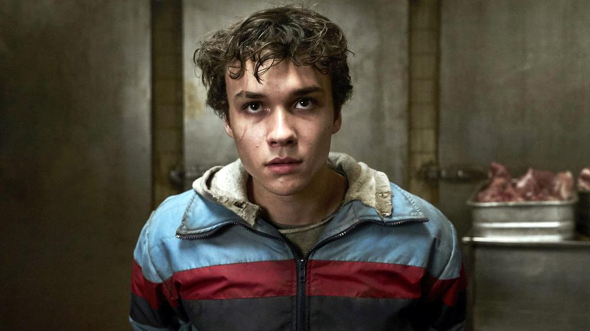

BENING LINTANG
Benjamin Hassan Wadsworth was born on November 8, 1999 in Houston, Texas, USA. He is an american actor known for Deadly Class (2018), Teen Wolf (2017), and Your Honor (2020). Benjamin Wadsworth was born and grew up in Houston, Texas. He is of Mexican, Iranian, English, Native American, French and Swedish descent. As he began acting by 2013, he was home-schooled during high school in order to enable his film and video work. In May 2019, Wadsworth became engaged to actress, Stella Maeve. Their daughter, Jo Jezebel, was born in January 2020.
Wadsworth became interested in acting, and had a role as Iggy in the comedy web series, Dad vs. Lad. He also had some parts in short movies (see below) and began to build experience. In October 2016, he was chosen to play Henry in the pilot for Let the Right One In series, based on the vampire novel by John Ajvide Lindqvist. However, TNT did not approve the pilot and did not proceed with the series. Later that year, Wadsworth made a special appearance in the final episode of the MTV series Teen Wolf, titled "The Wolves of War", playing Alec.
In November 2017, Wadsworth was chosen to play the lead role of Marcus Lopez in the SyFy television series Deadly Class. He had originally auditioned for another role, but when producers learned he was partially Latino, they invited him to read for Marcus. He was 19 when the series opened in early 2019. He was nominated for the Saturn Award for Best Performance by a Younger Actor in a Television Series for the role.